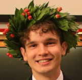

Luca Brocco
Data Scientist | AI Engineer | Physicist | Teacher
MSc in Physics of Data, University of Padova.
Below are the main milestones of the last few years.
Timeline
Hover over a line, or tap it on a phone, to see details.
- Education
- Work
- Volunteering
- Other